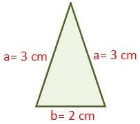

En geometria, un triangulo isosceles es un tipo de triangulo que tiene dos lados de igual longitud. A veces se especifica que tiene dos y solo dos lados de igualmente longitud y, a veces, que tiene al menos dos lados de igual longitud.